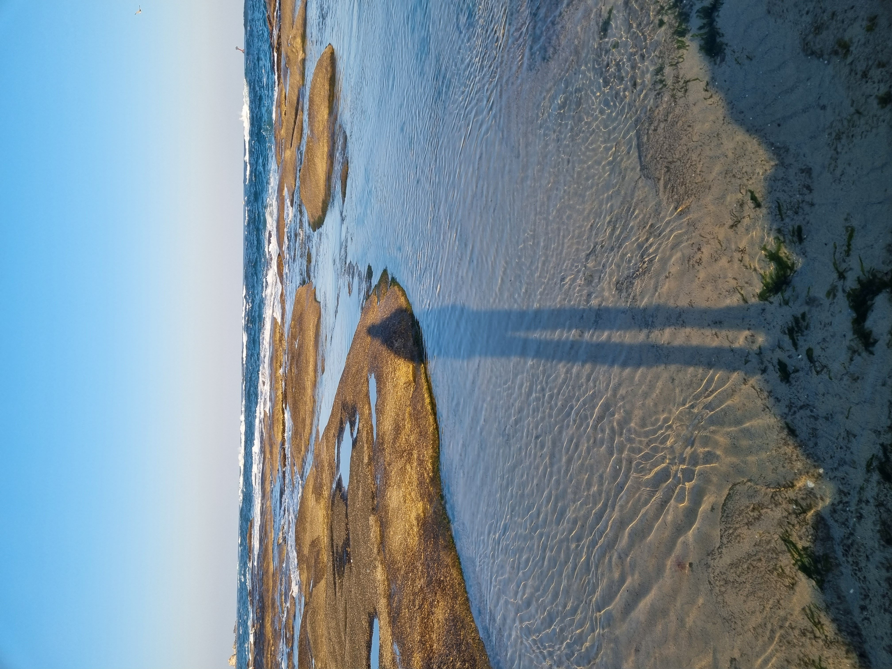

조금 무기력함에 빠진 날, 속초에 온 이유를 상기하며 후다닥 준비해서 버스를 타고 한시간이 걸려 아야진 해수욕장에 갔다. 세상에 왜 아야진 해수욕장이 이곳에서 유명 관광명소 인지 알게 되었다. 지면과 일직선으로 이루어진 바다는 굉장히 아름다웠고 겨울의 날씨에 아주 잘 어울려 있었다. 해변의 끝에서 끝까지 쭉 걸어다녔다. 노을이 지기 시작했는데 그 노을의 색마저 그곳 마을과 아주 조화를 이루며 아름답게 빛이났다. 역시 사람은 방구석에서 탈출을 해야 한다:)
